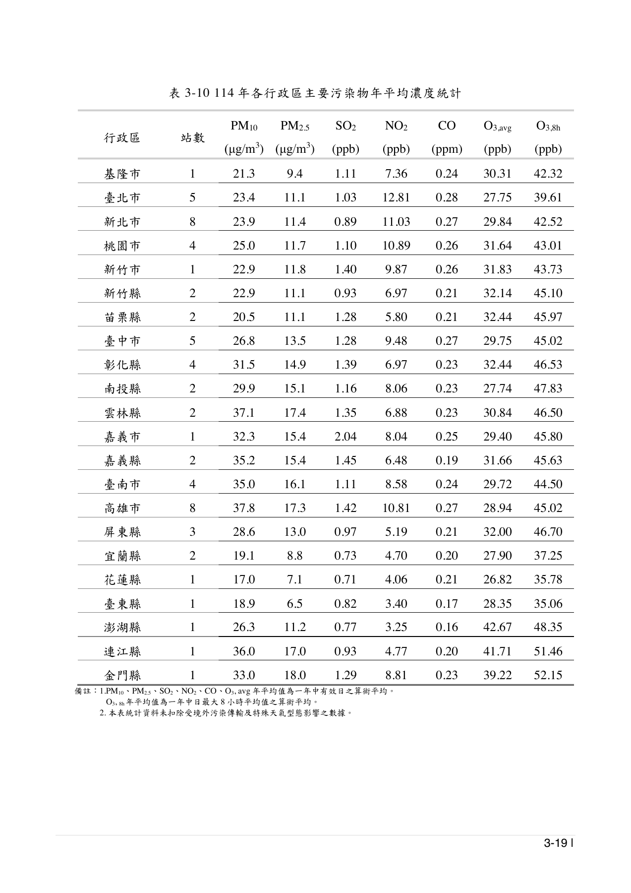
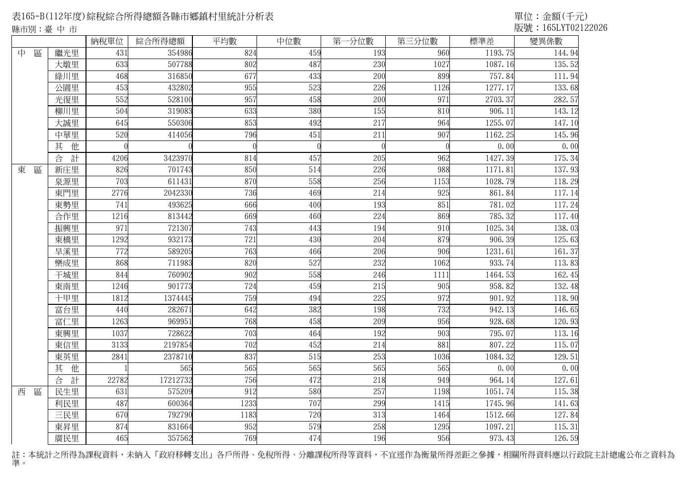

SIDE BY SIDE
在地圖上找一個地方
點選區界或下方區名，更換觀察對象。
斜線區域＝所選數值未公布，不代表零或低風險。小區死亡人數較少，年度波動可能較大；地區比較不能推論個人的疾病風險或因果。
THREE YEARS, TWO PLACES
把差異放進時間裡
A 銅色實線 · B 藍色虛線 · 全市灰線
AGE & MEDICAL RESOURCES
人口與照護資源，放在一起看
醫療資源按院所所在地統計，人口採同年度年底全體戶籍人口。每萬人口數由官方人數／家數除以該區人口計算；不代表醫療品質、候診時間或實際就醫可近性，也未扣除跨區就醫。此區固定呈現全體人口，不隨上方性別選單改變。
AIR / OBSERVED IN 2025
台中空氣，從測站看起
台中5個環境部測站 · 2025全年PM2.5自動監測
圓點是實際測站位置，數字對應下表；點選時依上方設定更換A或B行政區。測站年平均不是整區平均暴露；其他24區未以全市值或鄰站填補。本版只收錄環境部5站，未包含其他機關測站。
| 測站 | 所在區 | PM2.5 | 官方地址 |
|---|
ECONOMIC CONTEXT / 2023
生活背景，也一起看
2023 年申報戶綜合所得總額中位數
單位：萬元／納稅單位／年。這是綜合所得總額，不是縣市版的稅後所得，也不是每位居民的薪資、可支配所得或地方稅收。未納入政府移轉支出、免稅與分離課稅所得。
為什麼區級所得仍是2023年？
2025年綜合所得稅的區級中位數尚未發布；本區保留已核對的2023完整核定資料。2025家庭收支調查在台中採6個統計區，不能直接拆成29行政區，也不以全市所得填補各區。
2025 空氣品質來源與原表
環境部114年空氣品質監測年報，自動監測有效日之算術平均；未扣除境外污染及特殊天氣。不是即時AQI，也不是人口加權或個人暴露。完整官方原始年報 · 環境部來源入口。核對日期：2026-11-22。

29 區完整對照數據
指標定義、來源與原始表格
本專區資料核對日期：2026-11-21。健康資料為原死因死亡統計，不是疾病盛行率或就診率。各年度、各性別皆直接採官方原表；未列出的死因保留未列值，沒有以其他性別或全市值回推。
- 年齡標準化死亡率：依 WHO 2000 世界標準人口年齡結構調整，單位為每十萬人口；粗死亡率未調整年齡。死亡人數受地區人口規模影響，不能直接當風險。
- 死亡人數未滿 20 人時，官方將死亡率標記為 *；保留已公布人數，兩種死亡率保持缺值。未進入來源表所列死因者標記為「未列」，不補零。
台中市衛生局公共衛生監測系統：人口統計與醫療現況 · 人口原始 XLSX · 醫療資源原始 XLSX。高齡人口比例＝65歲以上年底人口／年底總人口 × 100；院所家數＝醫院＋診所；西醫師數＝醫院＋診所執業西醫師，未加計中醫師與牙醫師。每萬人口指標＝相應總數／同年度年底全體人口 × 10,000。本版為區級總量，尚未提供個別院所地址點位。
財政部表 165-B（112 年度）：台中各鄉鎮村里所得統計 · 開啟完整原始 PDF（21 頁）。採用每區「合計」列的官方中位數，未平均各里的中位數。

地圖：內政部國土測繪中心鄉鎮市區界線 TOWN_MOI_1140318，政府資料開放授權條款第 1 版。呈現用區界經簡化；GeoJSON 保留官方原始幾何。西側放大僅裁切視窗，未移動或縮放個別行政區。